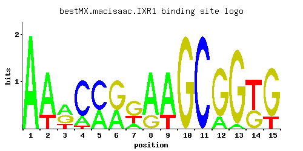

IXR1
YKL032C, ORD1
Protein that binds DNA containing intrastrand cross-links formed by cisplatin, contains two HMG (high mobility group box) domains, which confer the ability to bend cisplatin-modified DNA; mediates aerobic transcriptional repression of COX5b
Best-performing DNA-binding model.

View and copy the recommended matrices ↘
A | 0.997 0.753 0.433 0.189 0.378 0.377 0.189 0.754 0.754 0.001 0.001 0.189 0.056 0.001 0.001 C | 0.001 0.001 0.001 0.755 0.620 0.001 0.001 0.001 0.001 0.001 0.997 0.001 0.001 0.001 0.001 G | 0.001 0.001 0.377 0.001 0.001 0.621 0.566 0.244 0.001 0.997 0.001 0.809 0.942 0.377 0.809 T | 0.001 0.245 0.189 0.055 0.001 0.001 0.244 0.001 0.244 0.001 0.001 0.001 0.001 0.621 0.189
A | 99 75 43 18 37 37 18 75 75 0 0 18 5 0 0 C | 0 0 0 75 62 0 0 0 0 0 99 0 0 0 0 G | 0 0 37 0 0 62 56 24 0 99 0 80 94 37 80 T | 0 24 18 5 0 0 24 0 24 0 0 0 0 62 18
A | 1.14 0.86 0.30 -0.53 0.17 0.16 -0.53 0.86 0.86 -5.77 -5.77 -0.53 -1.74 -5.77 -5.77 C | -5.19 -5.19 -5.19 1.43 1.24 -5.19 -5.19 -5.19 -5.19 -5.19 1.71 -5.19 -5.19 -5.19 -5.19 G | -5.19 -5.19 0.74 -5.19 -5.19 1.24 1.15 0.30 -5.19 1.71 -5.19 1.50 1.66 0.74 1.50 T | -5.77 -0.27 -0.53 -1.76 -5.77 -5.77 -0.27 -5.77 -0.27 -5.77 -5.77 -5.77 -5.77 0.66 -0.53
Alternative candidate matrices 1
Historical matrix candidates from the original ScerTF database. Expand a source to inspect its original logo, scores, and matrix values.
IXR1Foat et. al.P = 6.12e-06View matrix ↘
Gene-level annotations and interactions.
Genes bound in ChIP-chip experiments 86 genes
YAL040C, YAL064W, YBL018C, YBL029W, YBL087C, YBR007C, YBR008C, YBR152W, YBR163W, YDL247W, YDR042C, YDR084C, YDR086C, YDR098C, YDR101C, YDR259C, YDR314C, YDR426C, YDR427W, YDR441C, YDR442W, YDR472W, YEL004W, YEL005C, YER011W, YER133W, YER158C, YFL029C, YGL116W, YGL190C, YGR024C, YGR114C, YGR115C, YGR249W, YGR279C, YHR005C, YHR005C-A, YHR028C, YHR092C, YHR093W, YHR096C, YHR146W, YIL015C-A, YIL119C, YIR020C, YJL023C, YJL216C, YJR100C, YJR160C, YKL044W, YKL077W, YKL167C, YKR010C, YKR075C, YLL033W, YLL034C, YLL041C, YLR002C, YLR112W, YLR143W, YLR165C, YLR166C, YLR167W, YLR286C, YLR287C, YLR300W, YMR052W, YMR177W, YMR260C, YMR272C, YMR279C, YNL120C, YNL145W, YNL146W, YNR054C, YOL099C, YOR023C, YOR024W, YOR025W, YOR049C, YOR050C, YOR253W, YOR287C, YOR315W, YOR339C, YPL156C
Genes affected by TF deletion 323 genes
YDR034C-C, YDR366C, YER178W, YGL173C, YHL016C, YHL048W, YKR041W, YKR012C, YMR045C, YMR046W-A, YOL013W-A, YOR192C-A, YOR227W, YMR016C, YAL007C, YDR222W, YEL017W, YGL009C, YGR095C, YLR463C, YLR465C, YLR467W, YOR039W, YOR071C, YPL015C, YPL047W, YDR034C-A, YDR034C-D, YDR365W-B, YGR279C, YIL141W, YJR015W, YKR011C, YKR013W, YKR076W, YLR213C, YLR243W, YMR011W, YMR042W, YMR046C, YOR192C, YOR192C-B, YPL177C, YMR266W, YAL003W, YFR035C, YGR122C-A, YHR145C, YLR462W, YLR464W, YMR194C-A, YPL016W, YPR138C, YBR066C, YDL037C, YJR147W, YLL066C, YLR342W, YMR135W-A, YNL113W, YNL115C, YOL104C, YOL106W, YOR317W, YOR347C, YGR244C, YHR210C, YLR152C, YLR157C-A, YNL333W, YNL337W, YBR129C, YDR098C-A, YFL013C, YFR006W, YKR102W, YLR341W, YMR135C, YMR136W, YNL142W, YOL103W-B, YOL105C, YOL139C, YOL109W, YOR344C, YPR013C, YPR015C, YOR086C, YCL020W, YDR340W, YDR281C, YER029C, YHR211W, YKL206C, YMR315W, YNL332W, YNL338W, YBR012C, YBR012W-B, YDR380W, YHR005C, YJR026W, YJR028W, YLR256W, YLR227W-A, YMR050C, YOR233W, YAR010C, YBR169C, YEL024W, YEL056W, YGR161C-C, YGR161W-A, YGR105W, YLR410W-B, YNL219C, YNL284C-A, YOR009W, YOR075W, YPL057C, YBR012W-A, YCR018C-A, YHL049C, YIL121W, YIL155C, YJR027W, YJR029W, YLR256W-A, YMR051C, YMR023C, YNL054W-A, YNR066C, YOR264W, YPL216W, YAR009C, YBR230C, YGR161C-D, YGR104C, YGR161W-B, YLR035C-A, YLR067C, YML003W, YLR410W-A, YPL026C, YBR132C, YJR151C, YLR348C, YPL274W, YCL026C-A, YBR265W, YHR214C-B, YHR215W, YHR217C, YIL060W, YJL217W, YPL154C, YPL092W, YPL156C, YFL014W, YDL038C, YDR170W-A, YFL021W, YGR036C, YGR038C-A, YHR094C, YJR156C, YLL067C, YLR312C, YLR343W, YLR345W, YLR349W, YPL137C, YAR071W, YBL030C, YCL025C, YBR296C, YDR316W-A, YGR189C, YHR213W, YHR214C-C, YHR214W-A, YNR001C, YPR167C, YGR262C, YIL064W, YJR003C, YCR061W, YGL250W, YHL026C, YIL162W, YLR232W, YML133C, YNL097C, YNL101W, YNR077C, YOL002C, YPL257W-A, YDR345C, YER101C, YIL114C, YMR143W, YBR241C, YDR261W-A, YDR210W, YJL101C, YKL062W, YPL066W, YBL101W-A, YER159C-A, YER190W, YLR231C, YLR233C, YML128C, YMR056C, YNL037C, YDR209C, YFR047C, YGR108W, YKL093W, YPL004C, YDL021W, YFL026W, YGR049W, YJL038C, YKL032C, YLL050C, YLR356W, YMR122C, YOL152W, YOL126C, YCL038C, YGR234W, YKL153W, YML045W-A, YBR139W, YDL014W, YDR481C, YDR544C, YFL027C, YGR044C, YMR086W, YMR148W, YMR088C, YMR090W, YNL160W, YOL155C, YOL157C, YPR002C-A, YPR035W, YNL316C, YBL005W-A, YBL042C, YJL196C, YML040W, YMR297W, YNR040W, YOR142W-B, YOR144C, YOR148C, YOR180C, YPR179C, YER138C, YIL140W, YJR110W, YLR299W, YMR006C, YMR039C, YAL062W, YAR053W, YBR217W, YDR210W-D, YHR170W, YJL077C, YPL041C, YBL107W-A, YFL002W-B, YER137C-A, YER138W-A, YGL255W, YIL169C, YLR237W, YLR300W, YMR034C, YNL104C, YOL003C, YPL257W-B, YBR244W, YDR210W-A, YDR239C, YDR210W-C, YDR241W, YHR137W, YJL076W, YMR211W, YPR158W-B, YFR030W, YGR051C, YLR334C, YMR158C-B, YMR158W-A, YNL141W, YOL103W-A, YOR343C-B, YPR012W, YCL040W, YDR365W-A, YIL011W, YPL136W, YFL064C, YGR027W-A, YJL042W, YOL101C, YOR306C, YOR343C-A, YOR374W, YPR069C, YPR009W, YGL096W, YGL160W, YGR203W, YGR235C, YNL324W, YPL103C
Genes supported by both experiments 4 genes
YGR279C, YHR005C, YLR300W, YPL156C